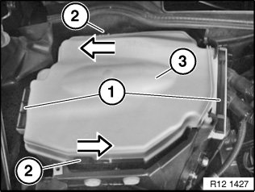
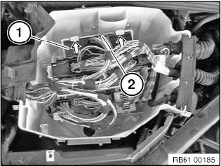
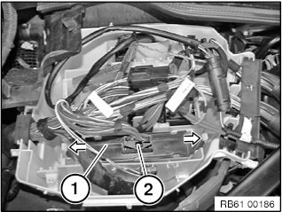
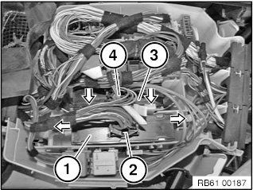

Power Distribution Module: Service and Repair
61 42 ... Removing And Installing/Replacing DC/DC Converter

NOTE:
DC/DC converter in vehicles with automatic start-stop function.
There are two versions:
- Without additional bracket for diesel engine vehicles
- With additional bracket for petrol engine vehicles
Depending on the equipment, one or both versions are installed in the M3

IMPORTANT: Read and comply with information on protection against damage from electrostatic discharge.
Necessary preliminary work:
Remove lower section of microfilter housing (all except M3)
Remove right upper section of microfilter housing M3

Unlock fasteners (1) from below and slide upwards approx. 10 mm.
Unlock locks (2) in direction of arrow.
Remove cover (3).

Diesel engine vehicles (without additional bracket):
Release lugs in direction of arrow. Remove DC/DC converter (1) by pulling upward. Disconnect plug connection (2).

Petrol engine vehicles (with additional bracket):
Release lugs in direction of arrow. Remove DC/DC converter (1) by pulling upward. Disconnect plug connection (2).

M3:
Release tabs in direction of arrow and remove DC/DC converter with additional bracket (1) upward. Disconnect plug connection (2).
Release tabs in direction of arrow and remove DC/DC converter without additional bracket (3) upward. Disconnect plug connection (4).
IMPORTANT: Do not mix up plug connections (2, 4).